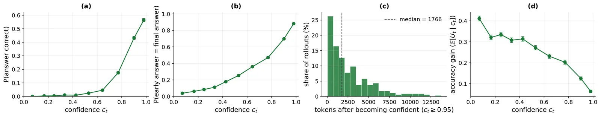
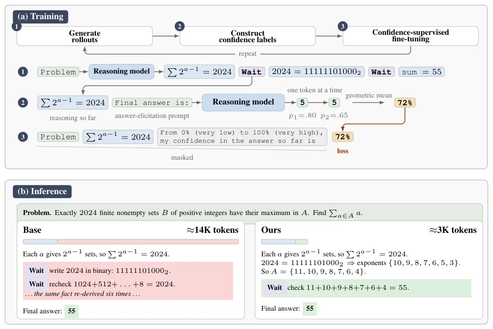
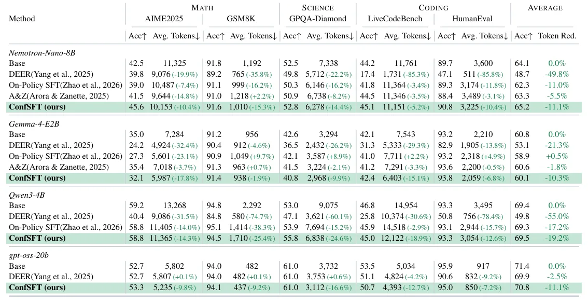

O problema: raciocínio custa caro
Modelos de linguagem que raciocinam — como o1 da OpenAI ou DeepSeek-R1 — conseguem resolver problemas difíceis de matemática, ciência e programação. Mas o custo é alto: eles podem gerar dezenas de milhares de tokens antes de chegar a uma resposta. Isso torna a inferência cara e lenta.
A abordagem tradicional para tornar o raciocínio mais eficiente é direta: você ensina o modelo a parar mais cedo ou penaliza raciocínios longos durante o treinamento. Métodos de early-stopping monitoram sinais como confiança ou estabilidade da resposta e interrompem a geração quando mais computação parece desnecessária. Outros usam reinforcement learning com penalidades de comprimento ou fazem fine-tuning em trajetórias curtas selecionadas.
Este paper, de pesquisadores da Universidade de Maryland e da Capital One, propõe algo diferente: e se você não treinar o modelo para ser eficiente, mas apenas para prever sua própria confiança? A hipótese é que aprender esse sinal metacognitivo — saber o quão confiante você está — pode, sozinho, levar a raciocínio mais curto.

A intuição: confiança revela o estado do raciocínio
A motivação vem de uma observação simples. Quando o modelo está no meio de um raciocínio, a confiança que ele tem na resposta atual carrega informação: estados de alta confiança tendem a produzir respostas mais corretas e estáveis, enquanto o ganho esperado de continuar raciocinando diminui.
Os autores analisaram rollouts de raciocínio do modelo base e confirmaram isso empiricamente. Quando a confiança em um estado intermediário é alta, a resposta naquele ponto tem maior probabilidade de estar correta e de concordar com a resposta final. Além disso, o modelo frequentemente continua gerando tokens mesmo depois de atingir confiança muito alta — sugerindo que ele ainda não 'sabe' que já chegou lá.
Essa observação sugere que ensinar o modelo a prever confiança pode funcionar como um sinal de parada implícito, sem nunca dizer explicitamente 'pare aqui' ou 'seja mais curto'.

O método: ConfSFT em três etapas
O procedimento se chama ConfSFT (Confidence Supervised Fine-Tuning) e funciona de forma autossupervisionada, usando apenas as próprias probabilidades de tokens do modelo. Ele tem três etapas principais.
Primeiro, o modelo gera rollouts de raciocínio para problemas de treino. Para cada problema, o modelo produz oito trajetórias completas, cada uma terminando em uma resposta. Durante a geração, o modelo insere marcadores especiais em pontos intermediários — chamados de trial states — onde ele poderia, em princípio, parar e dar uma resposta.
Segundo, os autores constroem rótulos de confiança autossupervisionados para cada trial state. A confiança em um estado é calculada como a probabilidade marginal de que a resposta naquele ponto esteja correta, considerando todas as continuações possíveis do raciocínio. Na prática, isso é aproximado usando as oito trajetórias: a confiança é a fração de rollouts que, partindo daquele estado, chegam à resposta correta.
Terceiro, o modelo é treinado apenas para prever essa confiança. Os tokens de raciocínio são mascarados na loss — o modelo não recebe gradiente sobre eles. A única supervisão é: dado o raciocínio até aqui, qual é a probabilidade de a resposta atual estar correta? Não há penalidade de comprimento, não há recompensa por parar cedo, não há nada sobre eficiência.

Resultados: até 25% menos tokens, mesma acurácia
Os autores testaram ConfSFT em quatro famílias de modelos: Gemma-4-E2B, Qwen3-4B, Nemotron-Nano-8B e GPT-OSS-20B. O treinamento usou apenas 600 problemas da competição AIME (anos 2000–2023), com validação em AIME2024. A avaliação cobriu cinco benchmarks: AIME2025 (matemática), GSM8K (matemática elementar), GPQA-Diamond (ciência), HumanEval e LiveCodeBench (código).
ConfSFT reduziu o número médio de tokens gerados em até 25% (no Qwen3-4B em GPQA-Diamond) mantendo a acurácia do modelo base. Em média, a redução ficou entre 10% e 19% dependendo do modelo, com acurácia igual ou ligeiramente superior ao base.
Comparado a baselines que otimizam eficiência diretamente, ConfSFT teve desempenho competitivo. DEER, um método de early-stopping por confiança, às vezes reduziu mais tokens, mas frequentemente com queda severa de acurácia (por exemplo, -15 pontos no HumanEval com Nemotron). On-Policy SFT e A&Z, que treinam para raciocínio curto, tiveram reduções de tokens comparáveis ou menores que ConfSFT, mas com acurácia similar ou inferior.
Importante: ConfSFT treinou apenas em problemas matemáticos (AIME), mas transferiu para ciência e código. Isso sugere que o sinal de confiança é independente do domínio.

O que muda no raciocínio?
Os autores investigaram como ConfSFT altera o comportamento do modelo. Uma análise decomôs os raciocínios em comportamentos de alto nível usando a taxonomia de Schoenfeld (1985), que classifica ações em leitura, análise, exploração, planejamento, implementação, verificação e transição.
A composição de comportamentos mudou pouco: ConfSFT não suprimiu seletivamente um tipo de raciocínio (como exploração ou verificação). Em vez disso, preservou a estrutura geral do raciocínio do modelo base, mas tornou cada episódio mais curto.
Durante o treinamento, a capacidade do modelo de prever confiança melhorou continuamente, enquanto o número de tokens gerados caiu e a acurácia permaneceu estável. Isso sugere que o modelo aprendeu a reconhecer estados de alta confiança e, implicitamente, a parar mais cedo — sem nunca ter sido treinado para isso.
Limitações e o que fica em aberto
O paper tem escopo limitado. O treinamento usou apenas 600 problemas de matemática, e a avaliação cobriu cinco benchmarks. Não sabemos se ConfSFT escala para datasets maiores ou domínios mais diversos. Também não está claro se o método funciona em modelos muito maiores ou em tarefas onde a confiança é mais difícil de estimar.
Outra limitação: o método requer múltiplos rollouts por problema para estimar confiança, o que aumenta o custo de treinamento. Os autores não reportam o custo computacional total nem comparam com o custo de treinar baselines como A&Z ou On-Policy SFT.
Além disso, o mecanismo exato pelo qual a supervisão de confiança leva a raciocínio mais curto não é totalmente compreendido. Os autores especulam que o modelo aprende a reconhecer estados de alta confiança e, implicitamente, a parar — mas não há análise causal direta. Pode haver outros fatores em jogo, como mudanças na distribuição de atenção ou na representação interna do estado de raciocínio.
Por fim, o paper não explora o tradeoff entre eficiência e acurácia de forma sistemática. Seria interessante ver curvas de Pareto variando a força da supervisão de confiança ou combinando ConfSFT com métodos de early-stopping.
Por que isso importa
A contribuição principal é conceitual: eficiência pode emergir como consequência de aprender sinais metacognitivos, sem ser diretamente otimizada. Isso abre uma direção de pesquisa diferente das abordagens convencionais, que tratam eficiência como um objetivo explícito.
Se a ideia se confirmar em escala maior, pode simplificar o design de sistemas de raciocínio. Em vez de ajustar penalidades de comprimento ou regras de early-stopping, você treina o modelo para entender seu próprio estado interno — e a eficiência vem de brinde.
Também levanta questões interessantes sobre o que mais pode emergir de supervisão metacognitiva. Se confiança leva a raciocínio mais curto, outros sinais — como incerteza, surpresa ou dificuldade percebida — podem levar a outros comportamentos desejáveis? Isso é especulação, mas o paper sugere que vale a pena explorar.
O que fica
- ConfSFT treina modelos apenas para prever confiança em estados intermediários, sem nenhum objetivo de eficiência, e ainda assim reduz tokens gerados em até 25%.
- O método usa supervisão autossupervisionada (probabilidades do próprio modelo) e treina com apenas 600 problemas, transferindo de matemática para ciência e código.
- Eficiência comparável a métodos que otimizam comprimento explicitamente, mas sem alterar a inferência: o modelo usa geração padrão, sem early-stopping.
- Limitações: escopo pequeno (600 problemas), mecanismo não totalmente compreendido, custo de treinamento não reportado, e falta análise de tradeoff eficiência-acurácia.
Paper original: Learning to Stop without Learning to Stop: Self-Supervised Confidence Training Improves Reasoning Efficiency
Comentários
Nenhum comentário ainda. Seja o primeiro.